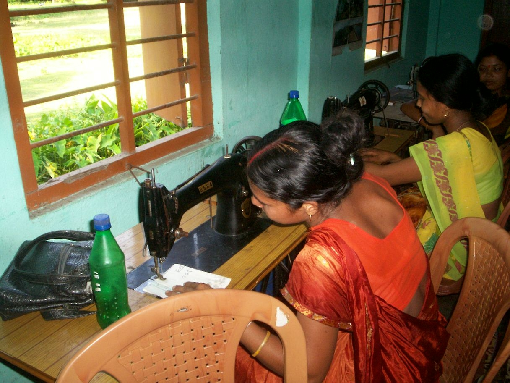

Vasundharaews
Vasundhara Enviro Welfare Society
The XMLHttpRequest Object
SVEWS TEAM
The organisation&s mission is to work for the effective empowerment of the socially, economically and politically marginalised people through their conscientisation, mobilisation and organisation around issues impinging on their development to ensure their equitable participation in the societal mainstream.
View Activities
